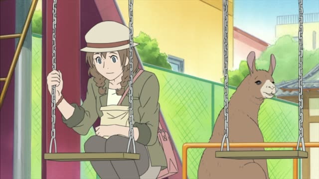
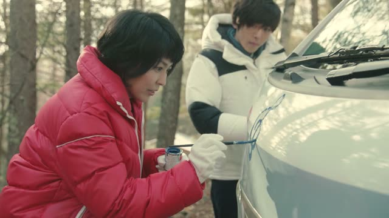
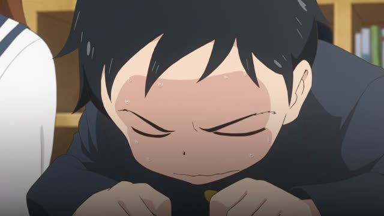
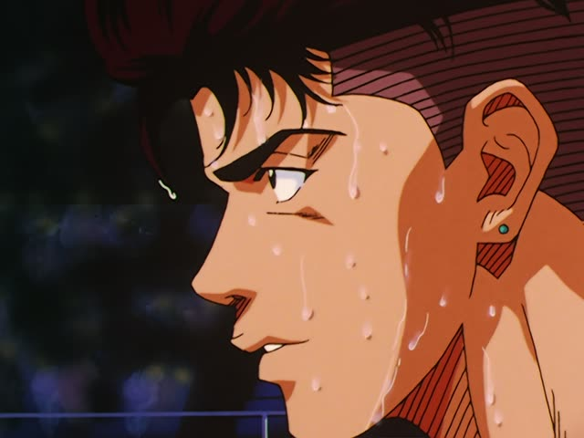

Potential form
| Polite | ～られます・～えます |
|---|---|
| Casual | ～られる る-verbs: drop る, add られる・～える う-verbs: u-sound → e-sound, add る |
Same meaning: "can do it". Only the politeness changes. する → できる, 来る → 来られる.

Shirokuma Cafe · Episode 49
昔は僕も余裕で乗れたんですけどね。
"I used to be able to ride it easily, back in the day." [a tiny swing]
The potential form means "can do it". る-verbs: drop る, add られる (食べる → 食べられる). う-verbs: change the last sound to the え-sound and add る (乗る → 乗れる, 行く → 行ける).
On this card, Shirokuma looks at a little swing he used to ride. 乗れた: the past of 乗れる, "could ride". んですけど makes it polite.
What you can do usually takes が: 日本語が話せる. を also happens in speech.
Vinland Saga · Episode 2
毎日お肉が食べられるからね。
"Because you can eat meat every day." [in Valhalla]
On this card, a father tells the kids about Valhalla. 食べる → 食べられる: "can eat". Note the が: お肉が食べられる.
Quick Examples
A coworker asks about your Japanese.
漢字はまだあまり読めません。
"I still can't read much kanji."
読む → 読める.
PoliteYour friend asks if you swim.
うん、泳げるよ。
"Yeah, I can swim."
CasualOrdering at a restaurant.
辛いものは食べられません。
"I can't eat spicy food."
食べる → 食べられる.
PoliteYour friend asks about the party.
ごめん、明日は来られない。
"Sorry, I can't come tomorrow."
来る → 来られる.
CasualWith and without
漢字を読む。
"I read kanji."
漢字が読める。
"I can read kanji." It's about ability.
Examples from Media
1 Litre of Tears · Episode 9
いいとは言えません。
"I can't say it's good."
A doctor about test results. 言う → 言える.
Death Note · Episode 31
今なら堂々と正面から出られます。
"Now we can walk right out the front."
出る → 出られる.
Dungeon Meshi · Episode 3
鎧は食べられないが、この中身ならどうだ？
"You can't eat the armor, but how about what's inside?"

Quartet · Episode 1
ゆうべ、あんまり眠れなくて。
"I couldn't sleep much last night."
眠る → 眠れる → 眠れなくて.
Odd Taxi · Episode 9
俺…うちに帰れるの？
"Can I... go home?"
帰る → 帰れる.
Sakamoto Days · Episode 3
クソッ、思考が読めねえ。
"Damn, I can't read his thoughts."
読めねえ = rough 読めない.

Teasing Master Takagi-san · Season 2, Episode 1
また勝てなかった…
"I couldn't win again..."
勝つ → 勝てる.

Slam Dunk · Episode 78
全国へ行けるぜ。
"We can go to Nationals."
行く → 行ける.